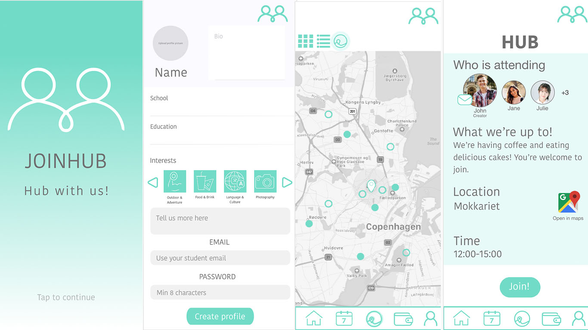
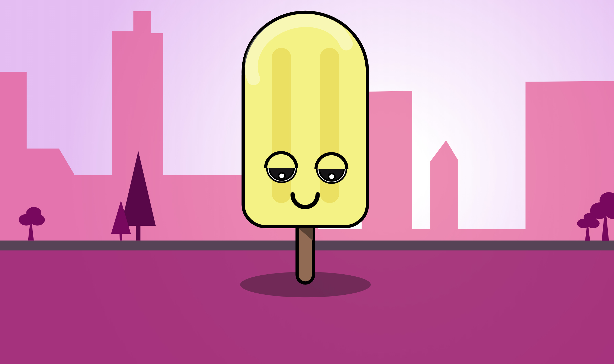

BASIC WEB
Mobile Website - Bauhaus
The focus in this project was to build a website with a layout and viewport for mobile devices. The design was inspired by a particular art style. Mine was the art style/ art movement called “Bauhaus” from the 1900’s. In this case the style follows very geometric modern style. There’s a clear relationship between art, society and technology.
Throughout this project I gained basic knowledge about HTML and CSS. Learning to create content with HTML and styling it with CSS. I also got an understanding of the design principles of the Bauhaus art style. I gained knowledge about using a specific style tile with color-schemes.
Responsive Website - Bauhaus
In this project my focus was to create a website suitable for different viewports and devices. The website had to have a responsive web layout meaning it could adapt to different sized viewports. The design was also inspired by the art style “Bauhaus” and was created with some of the design principles as the mobile website with improvements. While creating the website I was applying the “mobile first” principle. I was starting with small-screen devices and moving on to larger screen sizes.
In this project I developed my skills in HTML and CSS and learned how to use media queries to make a responsive website. The large screen version of my website is built with 2 columns and 1 column for the small screen version. Throughout the project I also worked with Adobe XD for the first time.
BASIC UX
Data Collection
Prototype
For this project we had to create a XD prototype website in groups for International students coming to Denmark. We did some research regarding the design, content and functionality. The website is targeted towards international students. The microcopy on the page was kept formal but still relaxed to fit the audience of the page. We drew sketches of how we wanted the webpage to look like and then we created a low-fidelity prototype in XD. Then we developed the low-fidelity prototype into a high-fidelity prototype with a wireflow. In the end we did some usability testing. We did the “Think aloud test”. Our focus in this test was to see how our test-persons interacted on our website.
In this project I gained knowledge about developing a low-fidelity into a high-fidelity prototype. And most of all, I gained knowledge about basic usability and how to test a prototype using a “Think aloud test”.
Design Sprint
In this project we had to create a prototype of an app within 5 days. The focus was to get through different faces each day and to create an app with great user experience/usability. The first day we spend creating ideas using mind maps, card sorting and information architecture. Second day was all about sketching and drawing ideas and sketches for the layout of the app. The third day we took important decisions and find the right solution for our app. The fourth day we did the XD prototyping of the app and made the wireflow for it as well. The final day we spent testing our app. We did peer reviews of the app and asked different participants different questions.
I gained a lot of knowledge about a work progress as a whole. How to divide work each day and get it done in time. I developed my skills in brainstorming, making storyboards and creating an XD prototype that’s testable. I also gained knowledge about usability test and how to set up a formal interview.
BASIC ANIMATION
Sprite animation on a background
Doing this project the focus was to create a sprite animation and place it on a background. I was important to choose a drawing style for the animation. I collected different visual elements from my inspiration source. The final sprite animation and background was did in illustrator.
Throughout this project I gained a lot of new skills in Adobe illustrator and a lot more practice in finding visual elements for inspiration for the character and background.
Javascript animation
In this project the focus was to create a website with ten different animations controlled by Javascript. This project included an animated svg and the svg should be controlled by Javascript. It should be obvious which animation is running and how to stop/start it. A sound is also included to help the viewer understand the website and different animations.
I gained new information about Javascript and was introduced to small basics in Javascript. I used my character on a background and added basic Javascript animations/sounds.
LINK HEREPool Project 1 - Bouncy Ball
The focus in this project was to play around with javascript and manage to make a project with the skills I had gained at this point. And for this project I did a ball bouncing on walls inside a square. I gained more knowledge about javascript and got to play with it.
LINK HERE